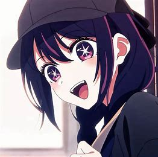

.jpg)
动画制作
2022年6月6日晚上6时（日本时间），在漫画连载网站设置倒数，倒数于6月10日凌晨0时（日本时间）结束。
6月10日当日，宣布将改编为电视动画，由动画工房制作。
第1集节目时长为90分钟，并于3月17日起于日本院线先行上映，于2023年4月12日电视播出。5月31日已播出回顾特别篇，第8集已于在6月7日播出。
6月28日当日，宣布将制作第2季
故事简介
雨宫吾郎是在乡下地区工作的妇产科医生，某天他的本命偶像星野爱出现在了他面前，吾郎错愕地发现她身怀双胞胎，几经思量后决定接受爱怀孕的事实并且全力协助，但是吾郎在爱分娩前被人杀害，爱则生下一对龙凤胎。当吾郎再次张开眼睛时，发现自己竟然转生成为爱的其中一名孩子。同样转生为爱的孩子的是生前同为爱的粉丝、吾郎曾经关照过的患者天童寺纱利奈。 吾郎与纱利奈在这一世被爱分别命名为“星野爱久爱海”（阿库亚）和“星野瑠美衣”（露比），并交由爱的所属经纪公司“莓Pro”社长夫妇照顾，爱则持续以偶像身份在演艺圈中活跃，直到某天爱在自家住宅被粉丝刺杀身亡，阿库亚与露比踏进并逐渐理解演艺圈残酷生态的同时，也慢慢接近并发掘爱遇害事件背后的真相
主要人物
-

爱／星野爱本作关键角色，阿库亚和露比的母亲，同时是雨宫吾郎生前协助接生的对象。艺名为“爱”。偶像团体“B小町”的C位，故事开始时的年龄为16岁。虽然她的表演和演唱技巧一般，但作为偶像是一个天才，对待工作十分上进。自认个性撒谎成性且不擅长爱人，经常依据他人脸色和所处情境发表意见，对于自身真正的想法不甚理解[漫 1]，但憧憬著爱与被爱[漫 2]。 单亲家庭出身，童年饱受母亲虐待，直至母亲因为窃盗入狱服刑，被送进孤儿院照顾，直至母亲出狱后也未接她回家，造成她缺乏爱人与被爱的经历[漫 1]。后来被时任星探的齐藤壹护挖掘，加入“B小町”成为团队C位，在15岁时邂逅当时在剧团“Lalalai”里的神木光，发生性关系意外怀孕，之后认识了帮助她进行产检的吾郎，在生完双胞胎后立即重返偶像活动。孩子则作为秘密，阿库亚和露比对外被当做是事务所社长的孩子。以接获导演五反田泰志的剧组邀约为契机出演电视剧，获得五反田的赞许。 在20岁生日的巨蛋演出前，因为阿库亚和露比一段关于父亲的谈话，决定约出当时已经分手的神木光和儿女见面，随后神木光疑似向杀死吾郎的狂热粉丝凉介透露住址，导致爱在自家门前被凉介持刀刺杀，死前向凉介坦承自身不懂爱、为了让自己爱上粉丝的愿望成真而持续编造谎言的心声，让凉介仓皇逃跑，向阿库亚和露比表达自身的歉意和情感后，便因为伤重不治身亡[漫 1][漫 3]。由于生前没有公开姓氏，因此鲜少被怀疑与星野兄妹的关系。所属团体“B小町”也在她过世两年后解散[漫 4]。她的死亡也成为阿库亚、齐藤壹护和五反田泰志联合向神木光复仇的开端。 据自称“演艺之神”的谜之少女所言，她的灵魂已归回星河，不复存在，既不会重生也不会转世[漫 5]
-
.jpg)
阿库亚／星野爱久爱海本作的男主角。母亲爱给予的姓名是“星野爱久爱海”[注 1]，昵称及艺名为“阿库亚”。和露比相互了解对方也是转生者，但起初并未发觉相互的身份。因为拥有前世的记忆，在幼儿时期就能说话。用成人的思想看护着爱，但成长到一定程度，在母亲拍摄五反田泰志导演的作品时，被五反田相中其才能，就在母亲所属的事务所中出道成为童星，利用前世的知识展现出了特殊的才能。 纵然常常自称演技力平凡，但因其前世遗传下来的高超沟通能力和脑筋运转而得以活用在演技上。前世曾考进国立医科大学，在高中入学考试，其学力偏差值更达至70以上[漫 6]。爱的死亡令其留下心理创伤，其后请求五反田收下为其入室弟子。因为母亲的事情而多次试图阻止露比成为偶像，失败后决定让她在京子底下工作，并和露比进入同个高中。 阿库亚调查那名刺杀爱的粉丝后，除了认出他也是杀死吾郎（前世）的人之外，同时觉得他应该没有能力找出他们家的地址，故怀疑他是受自己的亲生父亲指使，希望为此报仇。为了追查自己前世和爱的死因，从小就积极为了进入演艺圈而铺路。以镝木胜也为契机而接拍“今甜”电视剧开始，在进入演艺圈后除了向多方人士探听母亲生前的消息外，还搜集各个他认为可能跟自己或母亲有关连的人的头发做DNA鉴定。在真人秀和黑川赤音认识，发现她异常敏锐的观察力，认为她可能可以帮自己解开这些谜团，同时因为母亲的事情认为单身的自己长期待在加奈旁边会对加奈有负面的影响，于是开始跟赤音交往，并对她透漏了许多案情相关的信息。在鉴定了姬川大辉的DNA后得知自己与姬川大辉是同父异母的关系，与姬川大辉的谈话中误以为上原清十郎就是自己的父亲并且得知上原清十郎与姬川大辉的生母殉情后原本打算放弃复仇过上新人生，却因后来与壹护的谈话中得知上原清十郎并非自己的亲生父亲且在上原清十郎与姬川大辉的母亲殉情时爱尚未搬家，后透过跟踪及窃听赤音得知自己父亲其实是神木光，也发现赤音在这件事情上已经涉入过深，出于对她的保护向她提出“分手”并阻止她继续调查这件事，当赤音说出阻止他的复仇计划，并提出有本事过来阻止的句话。与导演策划启动小时候拟定的复仇计划后，恰巧因有马加奈的炎上事件，与周刊记者以爆料自己和露比是爱的私生子女这件事，来换取压下有马加奈的绯闻。与露比私底相谈期间坦承自己是吾郎的转世，劝谏露比放下复仇的念头[漫 7]。
-
.jpg)
露比／星野瑠美衣本作的女主角，阿库亚的孪生妹妹。母亲爱给予的姓名是“星野瑠美衣”[注 3]，昵称及艺名为“露比”。和阿库亚相互了解对方也是转生者，但起初并未发觉相互的身份。和阿库亚一样，在幼儿时期就很早熟，和转生前一样的阿宅性格甚至让哥哥阿库亚敬而远之。虽然本身不自觉，实则拥有能够听见灵体声音的灵异体质。和阿库亚一起在母亲星野爱所属的事务所出道。 由于前世只是个国小学生，没有像阿库亚或壹护一样迅速理解母亲命案的疑点。小时候透过打医院电话得知吾郎已经失踪，一直想要找到他，向往加入演艺圈的理由是母亲和找到吾郎。最终在宫崎拍摄团体MV的时候意外发现吾郎已经化为白骨的遗体。后在当地疑似幽灵或神的声音的指引下，得知吾郎遇害前不久有一名疑似初中生和一名后来被发现是刺杀爱的凶手的大学生在附近游荡，终于意识到共犯的存在和兄长从小处心积虑要进入演艺圈的理由。之后开始寻找那名当时是初中生的人的身份，并开始从壹护那边无所不用其极地获取管道，基于和阿库亚一样的动机试图在演艺圈大红大紫。因有马加奈的炎上事件，希望有办法帮助加奈，却不料阿库亚竟以自己与阿库亚其实是爱的亲生子女为爆料内容，与周刊记者换取压下加奈的炎上事件，对此露比非常不能谅解阿库亚爆料两人身份这件事，认为这是对死前一直隐瞒这件事的母亲的不敬。后来从不知火芙莉露口中得知阿库亚打算透过电影来复仇的计划，因而决定争取饰演母亲的位置。与阿库亚相谈期间得知后者正是吾郎的转世[漫 7]。
性格解说
| 星野露比 | 有马加奈 | 黑川赤音 |
|---|---|---|
.jpg) |
.jpg) |
.jpg) |
| 舞蹈天才 | 十秒飙泪的天才童星 | 犯罪心理学解剖演员 |
| 乐观开朗小太阳 | 满月演唱者，B小町c位 | 坚持不服输的天才演员 |